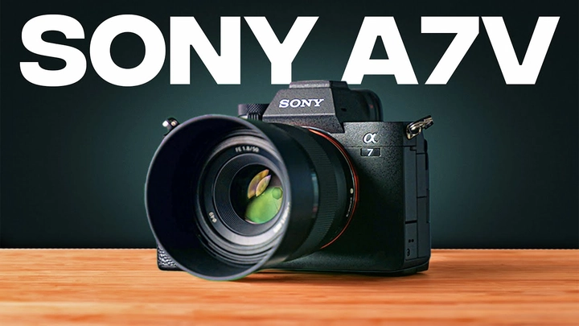
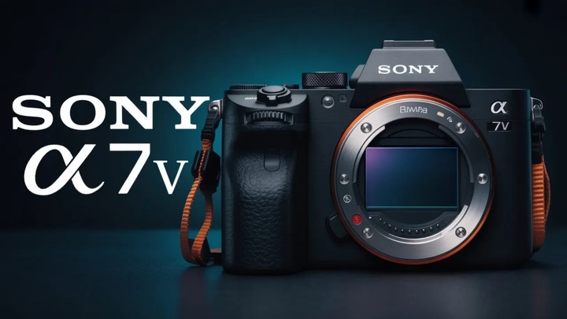

Sony A7V – Máy ảnh mirrorless AI mạnh mẽ cho nhiếp ảnh và làm phim 2026
Sau nhiều lần nhá hàng thì cuối cùng Máy ảnh Sony A7V vừa được ra mắt chính thức trong buổi giới thiệu của Sony, mở ra một bước ngoặt mới trong dòng máy ảnh mirrorless full-frame. Cộng đồng đam mê đồ công nghệ Sony trên toàn thế giới đang sục sôi hơn bao giờ hết. Với tên gọi chính thức là Sony A7V, chiếc máy ảnh này không chỉ là bản nâng cấp đơn thuần từ A7 IV, mà còn định nghĩa lại tiêu chuẩn cho các máy ảnh mirrorless hiện đại, hướng tới nhiếp ảnh gia, nhà làm phim và YouTuber.
Sony đã khéo léo kết hợp những công nghệ tiên tiến nhất của hãng, từ cảm biến 33MP full-frame, AI Autofocus, quay video 4K 60fps không crop, đến chống rung 8 stop (IBIS). Tất cả đều nhằm mang lại trải nghiệm sáng tạo tối đa cho người dùng, từ nhiếp ảnh chuyên nghiệp đến sản xuất nội dung video.
Thiết kế và trải nghiệm người dùng
Sony A7V giữ lại dáng vẻ quen thuộc của dòng Sony Alpha nhưng được tối ưu hóa về ergonomics và trải nghiệm thao tác.
-
Màn hình LCD xoay 4 chiều cho phép chụp linh hoạt, phù hợp với vlogging hay các góc chụp khó.
-
Kính ngắm điện tử EVF OLED 9,44 triệu điểm giúp quan sát chi tiết và chính xác màu sắc.
-
Cấu trúc thân máy bền bỉ, tăng khả năng chống thời tiết, với bề mặt cầm chắc tay, nút bấm bố trí hợp lý.
-
Giao diện cảm ứng nhạy cùng menu tùy chỉnh nhanh, hỗ trợ chuyển đổi giữa chế độ chụp ảnh và quay video liền mạch.
Những cải tiến này giúp Sony A7V trở thành máy ảnh vừa mạnh mẽ vừa dễ sử dụng, phù hợp cho cả người mới lẫn các chuyên gia.

Cảm biến và xử lý hình ảnh
Sony A7V được trang bị cảm biến full-frame 33MP BSI CMOS, thiết kế backside illuminated và stacked giúp:
-
Giảm hiệu ứng rolling shutter khi chụp chuyển động nhanh.
-
Tăng tốc độ đọc dữ liệu, đảm bảo xử lý mượt mà các cảnh hành động.
-
Tăng khả năng xử lý ánh sáng yếu, giữ chi tiết và giảm nhiễu.
Cảm biến này kết hợp với bộ xử lý BIONZ XR+ cùng AI processing unit. Bộ xử lý AI mới không chỉ nhận diện đối tượng, mà còn dự đoán chuyển động và theo dõi phức tạp theo thời gian thực, mang lại độ chính xác tăng 60% so với A7 IV.
AI Autofocus thông minh
Hệ thống NextG AI Autofocus là điểm nhấn lớn của Sony A7V. Tính năng này nhận diện và theo dõi:
-
Con người, động vật, chim, xe cộ, côn trùng.
-
Các chuyển động phức tạp ngay cả khi đối tượng bị che khuất hoặc quay đi.
Điều này giúp các nhiếp ảnh gia và nhà làm phim bắt trọn khoảnh khắc, giảm rủi ro bỏ lỡ cảnh quan trọng, đồng thời tối ưu hóa trải nghiệm chụp ảnh thể thao, động vật hoang dã, hoặc video hành động.
ISO và khả năng xử lý ánh sáng
Sony A7V hỗ trợ triple native ISO, từ 800, 1000 đến 12.500, giúp:
-
Duy trì chất lượng hình ảnh cao trong mọi điều kiện ánh sáng.
-
Giảm nhiễu tối đa, giữ chi tiết màu sắc trung thực.
-
Cho phép chụp trong môi trường thiếu sáng mà không cần đèn trợ sáng.
Điều này đặc biệt hữu ích cho các nhiếp ảnh gia đêm, videographer và những người làm nội dung ngoài trời.

Chống rung 8 stop (IBIS) và quay video 4K 60fps
Một trong những cải tiến đáng giá khác là hệ thống chống rung 8 stop IBIS:
-
Ổn định cả khi cầm tay, giúp quay phim mượt mà.
-
Hỗ trợ quay video 4K 60fps không crop, giữ nguyên góc nhìn và chiều sâu trường ảnh.
-
Giảm hiệu ứng jello và rung lắc khi chụp chuyển động nhanh.
Kết hợp với khả năng quay 10-bit color và S-Log3/HDR HLG profiles, A7V giúp các nhà làm phim chuyên nghiệp và YouTuber đạt chuẩn màu sắc điện ảnh mà không cần thiết bị phức tạp.
Chụp liên tục và quản lý bộ nhớ
Sony A7V có khả năng chụp liên tục 20fps với AF/AE tracking, gấp đôi tốc độ A7 IV.
Bộ đệm dữ liệu (buffer) được tinh chỉnh, cho phép chụp liên tục dài hơn mà không bị gián đoạn.
Điều này mang lại lợi thế lớn khi chụp:
-
Thể thao, động vật hoang dã, hành động nhanh.
-
Dự án quay phim nhiều cảnh liên tục.
-
Thực hiện các cảnh chụp liên tiếp mà vẫn giữ chất lượng hình ảnh và màu sắc.
Kết nối và workflow
Sony A7V hỗ trợ Wi-Fi 6E, cho phép:
-
Chuyển dữ liệu không dây tốc độ cao, vượt xa 800MB/s.
-
Hỗ trợ sạc nhanh qua USB-C, livestream hoặc quay dài.
-
Các phụ kiện như VC5 vertical grip tăng dung lượng pin và điều khiển chuyên nghiệp.
Điều này giúp các nhà sáng tạo nội dung tối ưu workflow, từ truyền dữ liệu nhanh đến làm việc lâu dài trên trường quay.
Giá cả và thời gian ra mắt
-
Giá dự kiến: 2.799 – 3.999 USD (body only), định vị trong phân khúc high-end hybrid camera.
-
Thời gian ra mắt dự kiến: Quý 1 năm 2026, sẵn sàng phục vụ các dự án nhiếp ảnh và làm phim lớn trên toàn cầu.
Tóm tắt điểm nổi bật
Sony A7V mang đến một máy ảnh không cần thỏa hiệp:
-
Cảm biến 33MP full-frame với công nghệ BSI CMOS stacked.
-
AI Autofocus thông minh theo dõi đối tượng phức tạp.
-
Quay video 4K 60fps không crop, chống rung 8 stop IBIS.
-
Chụp liên tục 20fps với AF/AE tracking.
-
ISO triple native, giữ màu sắc và chi tiết trong mọi điều kiện ánh sáng.
-
Màn hình xoay 4 chiều, EVF OLED, thân máy bền bỉ và thời lượng pin dài.
-
Kết nối Wi-Fi 6E, hỗ trợ sạc nhanh và phụ kiện chuyên nghiệp.
Đối tượng phù hợp
Sony A7V được thiết kế cho:
-
Nhiếp ảnh gia chuyên nghiệp: Bắt trọn khoảnh khắc, xử lý ánh sáng khó, chụp hành động và thể thao.
-
Nhà làm phim: Video 4K 60fps mượt mà, màu sắc điện ảnh, workflow linh hoạt.
-
YouTuber và content creator: Gọn nhẹ, dễ sử dụng, linh hoạt cho vlogging và quay ngoài trời.
A7V là sự kết hợp hoàn hảo giữa hiệu năng chuyên nghiệp và trải nghiệm người dùng dễ dàng, đáp ứng hầu hết nhu cầu sáng tạo.
Kết luận
Sony A7V không chỉ là một máy ảnh mirrorless mới; nó là tuyên ngôn về tương lai nhiếp ảnh và quay phim. Với sự kết hợp giữa:
-
Cảm biến full-frame 33MP, AI Autofocus thông minh, quay video 4K 60fps, chống rung IBIS 8 stop, kết nối Wi-Fi 6E, và workflow tối ưu,
Sony A7V trở thành lựa chọn lý tưởng cho mọi nhiếp ảnh gia, nhà làm phim và YouTuber. Nó thể hiện triết lý đổi mới: không phải chạy theo megapixel, mà là nâng cao trải nghiệm sáng tạo thực sự.
Nếu bạn đang tìm kiếm một máy ảnh vượt trội về hiệu năng, màu sắc chính xác, tốc độ xử lý nhanh và dễ sử dụng, Sony A7V là lựa chọn hoàn hảo cho năm 2026 và những dự án sáng tạo tiếp theo.